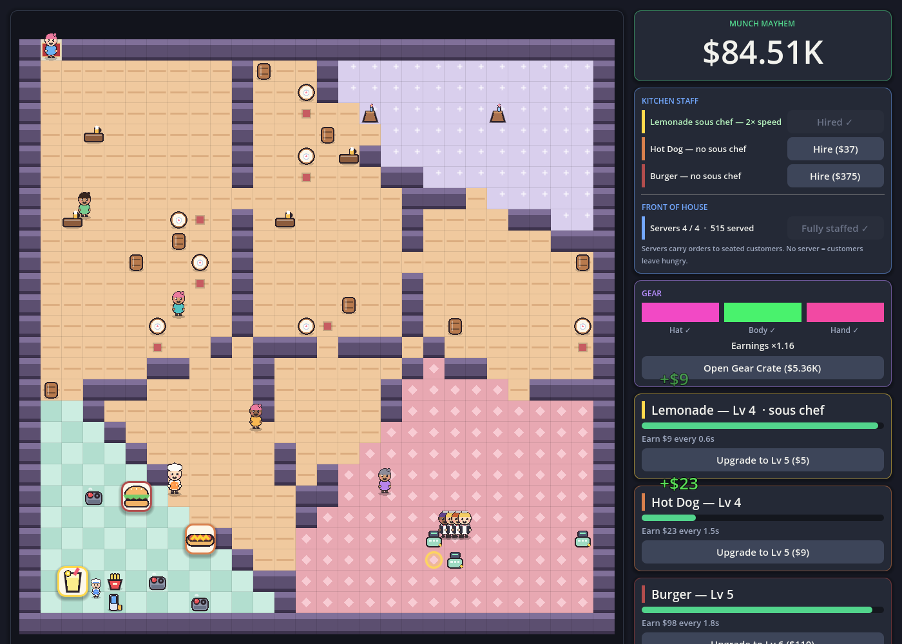
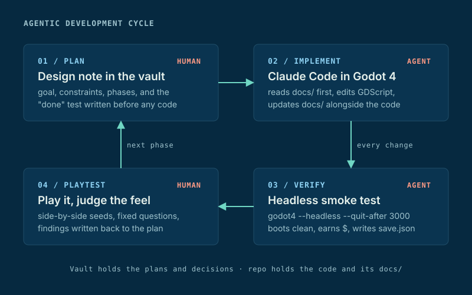
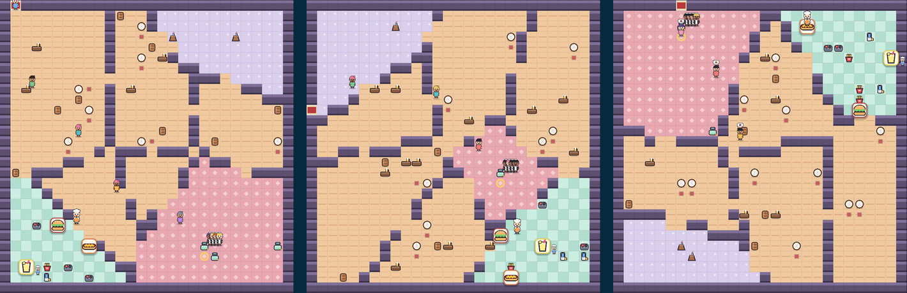
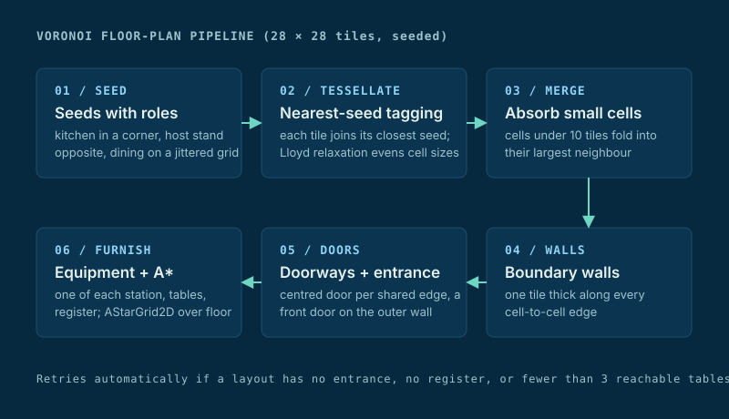

Project · Game Development · Agentic Engineering
Munch Mayhem In progress, playable prototype
An idle restaurant game in Godot 4. It is also a case study in agentic software engineering. The question is how far an AI coding agent can carry a project from an empty editor to a shipped game, and what process keeps that codebase sane.
The game is still in development. Today it is a playable prototype with three upgradeable stations, staff, gear, customers, and a new procedurally generated kitchen on every launch.
Overview
Stations cook on a timer and pay out. Upgrades raise the payout and shorten the cycle. Customers walk in, order, sit, and pay when a server delivers their plate. No server, and they leave angry.

Agentic Development Cycle

I write the plan and judge the result. The agent writes the GDScript, keeps the docs current, and runs the checks. Three rules keep that loop honest.
Plans and code live apart. Design notes and decisions live in a notes vault. The repo holds only code and a docs folder that describes what is actually built. The agent updates that folder in the same change as the code, so the docs never drift.
Every change gets a machine check. A headless run plays about twenty seconds of game time and must exit clean: every script parses, the scene boots, the first station pays out, and a save lands on disk. It takes ten seconds and runs after every edit.
Playtests answer fixed questions. Each build ships with a written list of what to judge: game feel, balance, UI, and what was missing. The findings go back into the plan before the next phase starts. The generator below was chosen this way, by playing candidates side by side on the same seed.
Why this counts as engineering
The hard part is not getting an agent to write GDScript. It is keeping a codebase a person can still read after the agent has touched it a hundred times. The architecture that came out is deliberately small: one state owner, pure functions for balance, and UI that re-reads state instead of caching it. A human or an agent can read the whole game in one pass.
Voronoi Floor-Plan Generation
Every launch builds a new 28 by 28 tile kitchen. Thirteen generators were built in a sandbox and compared on the same seeds: binary space partitioning, cellular automata with three post-processes, a hybrid, and a family of Voronoi variants. Voronoi with role-based seeds on a jittered grid won. Its rooms look irregular but believable. Pinning the kitchen and the host stand to opposite corners gives every layout a sensible flow from door to table to kitchen.

Two equations do most of the work

Chefs, servers, and customers all path on the same grid.
Game Systems
The runtime is four singletons with one job each: pure balance functions, one owner of game state, a debounced save, and the location that runs the generator and builds the pathfinding grid. Nothing else owns mutable state.
Station progress ticks in one place, so a reload resumes mid-cycle with no per-widget restore logic. Widgets re-read state on every signal instead of caching it. That costs a little CPU and is correct by construction.
Balance is a handful of curves
Customers and servers are transient agents with small state machines. A seated customer has a patience timer. If it runs out they leave angry and pay nothing. That pressure is the whole reason to hire servers.
Saves are automatic. Any state change marks the game dirty, and it writes to disk after half a second of quiet and again on window close. The save format is versioned, and the first migration has already been exercised.
Where It Stands
In progress. The prototype is playable end to end: buy and upgrade stations, hire staff, open crates, serve customers, and come back to a saved game. It is not yet a released game.
Done: the one-shot MVP, the procgen sandbox and its playtest, the generator port with A* movement, the customer and server layer, and the code-drawn art pass.
Next: sound and particles, a mobile portrait layout, offline earnings, and new locations with prestige. Each new location becomes a fresh generated kitchen, which is where the procgen work pays off. After that comes the real test: cleaning up a vibe-coded game far enough to ship it.